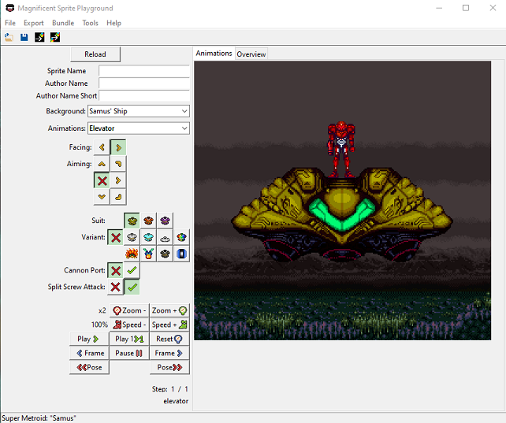

For instructions on how to use autosplitting on console, check out these SNES Classic and FXPak/SD2Snes tutorial videos! (If you don't have EmoTracker, you can download EmoTracker here)
NOTE: Make sure to apply your custom sprites to generated DASH roms and not the vanilla rom!
